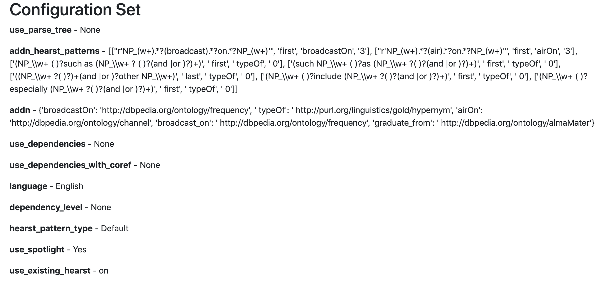

Main Documentation
Use Cases
About Hearst Patterns
Hearst patterns are a specific method for triple extraction. Here we shall talk about using the method. In order to understand the method do check out the blog or simply visit the web application and information regarding it, would be present in the About Methods tag
Hearst patterns can either be manually added and can also be set to Using pre-defined hearst patterns checkbox, which should be present in the configuration page. If you wish to add hearst patterns, make sure to the patterns in the required format. (information regarding this can be found at About tab of the web application

Lexicalizations
Below the hearst pattern input box is the lexicalizations box. Here lexicalisations for dbpedia properties/verb+prep can be added, overwritten. Do make sure to add them in the correct format. Information regarding the existing lexicalisations and the format for input can be found at the About page of the web application.Example
We shall use the same text, but this time we will use the use predefined hearst patterns option. We shall also enable Spotlight. We should get the configuration as such
We then continue to run the application normally as we did before and we should get the following results page

Here the present hearst pattern were unable to find triples and hence the results page gives us no triples.